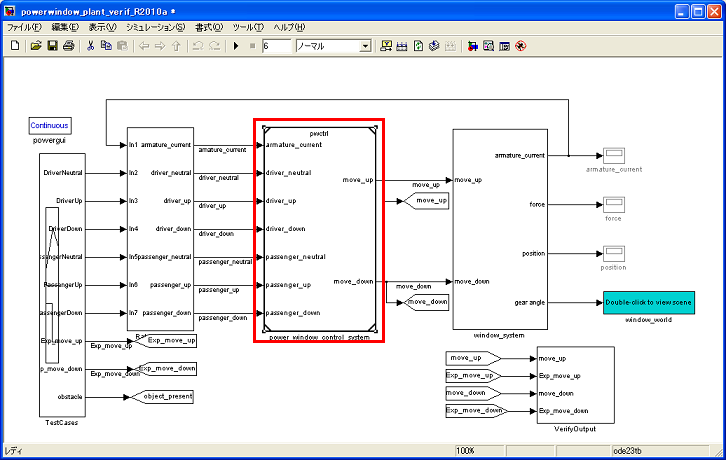
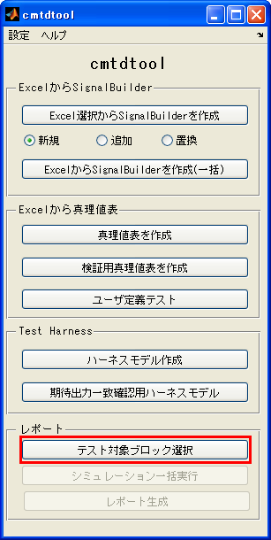
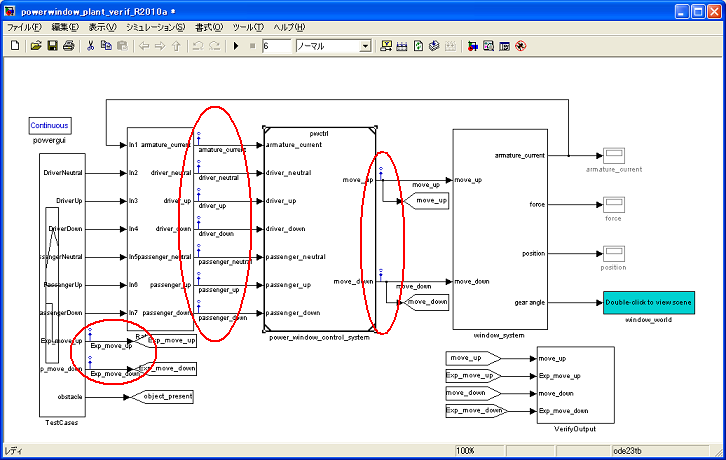
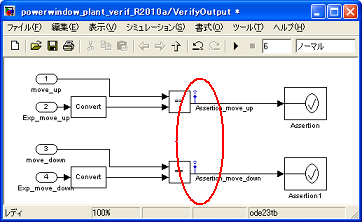
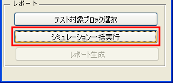
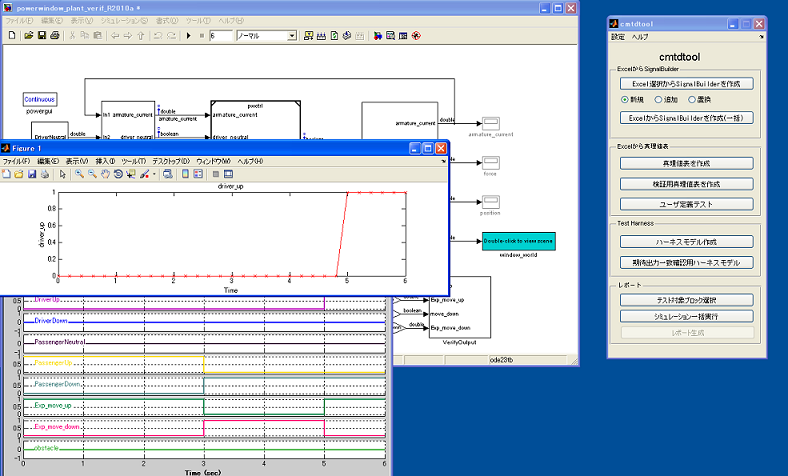
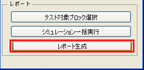
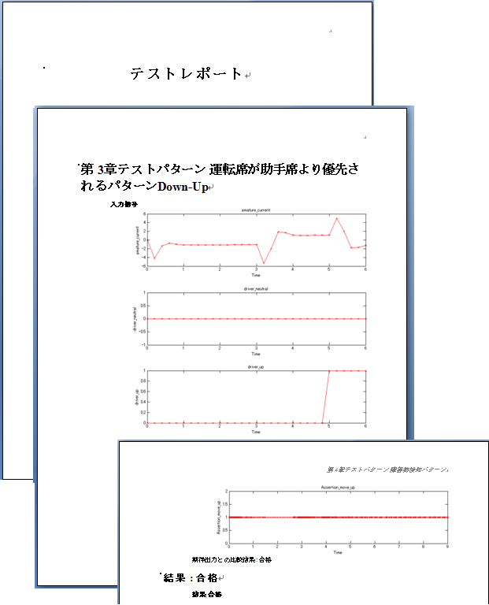
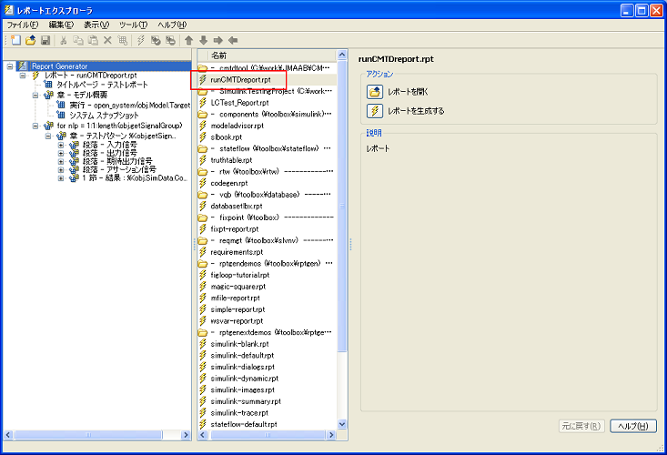

テストレポートの自動生成
- MATLAB R2008a以降対応
- Simulink® Report Generator™ および MATLAB® Report Generator™ が必要。
Contents
機能詳細
(1) 条件の確認
このテストレポートの自動生成機能は、次の条件を満たす場合に利用できます。
- モデル中にテストベクタおよび期待出力値を含むSignalBuilderブロックが1つ存在すること
- テスト対象となるサブシステム(もしくはモデル参照ブロック)が存在し、その入出力信号はスカラー信号であること
- アサーションブロックなどによって、モデルの動作を比較する信号を持ち、その信号が0(false)を1ステップでも含む場合にはテスト不合格とすること。
(2) 次の記述に従ってモデル中に適切な信号名を付ける
- テスト対象となるサブシステム(もしくはモデル参照ブロック)の入出力信号
- 予測期待値となる信号に Exp_ で始まる信号名
- アサーション信号(予測期待値との一致比較を実施する信号)に Assertion_ から始まる信号名
(3) テスト対象となるサブシステム(もしくはモデル参照ブロック)を選択する。

(4) 「期待出力一致確認用ハーネスモデル」 をクリックする。

これにより、上記(1)で設定した3種類の各信号に信号ロギングが設定されます。


(5) 「シミュレーション一括実行」をクリックする。

SignalBuilderブロックの各タブに対してシミュレーションが行われ、 3種類のロギング設定された各信号に対して、時系列信号を描画します。 描画した信号は、カレントフォルダ内 figsフォルダ内に保存されます。

(6) 「レポート生成」ボタンをクリックする。

本ツールは、レポートジェネレータ設定ファイル: runCMTDreport.rpt (cmtdtoolインストールフォルダ内に保存) の設定に従って、次の情報をマイクロソフトワードファイル "モデル名"_report.doc に出力します。
- モデルのスナップショットを掲載
- SignalBuilderブロックの各信号グループに対する対象サブシステムの入信号を描画
- SignalBuilderブロックの各信号グループに対する期待出力値を描画
- SignalBuilderブロックの各信号グループに対する対象サブシステムの出力信号を描画
- SignalBuilderブロックの各信号グループに対する対象サブシステムのアサーション信号を描画
- SignalBuilderブロックの各信号グループに対してアサーション信号がすべて非ゼロの場合は 合格 判定。 1ステップでもアサーション信号にゼロが含まれる場合には 不合格 判定を行う

レポートのカスタマイズ
本レポートの機能は、レポートジェネレータの機能を利用した テンプレートを作成することによって行われています。 レポートのテンプレートファイルは、cmtdtoolのインストールフォルダに 含まれる以下のファイルです。
runCMTDreport.rpt
このテンプレートを編集するためには、コマンドウィンドウにおいて次を実行し、
report
中央の runCMTDreport.rpt を選択します。

デモ実行方法
- cmtdtoolフォルダ内 cmtdtool_sampleharness.mdl を開く
- cmtdtool_sampleharness.mdl 内「TestModel」をクリックし、カレントのブロックとする
- cmtdtool 上で「テスト対象ブロックの選択」ボタンをクリックする
- cmtdtool 上で「シミュレーションの一括実行」ボタンをクリックする
- cmtdtool 上で「レポート生成」ボタンをクリックする
- コマンドウィンドウから以下を実行することでGUIと同様な操作が実行可能であることを確認する
open_system('cmtdtool_sampleharness') obj = runCMTDReport('cmtdtool_sampleharness/TestModel'); obj.runSimAll; obj.runReport;